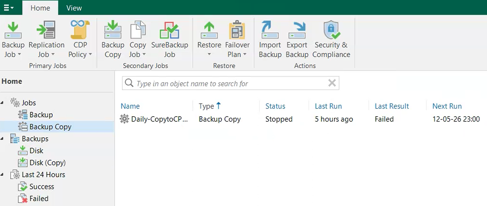

Objective
This check verifies that backup copies are replicated to an offsite location.
Missing offsite backups can impact:
- Disaster recovery
- Ransomware resilience
- Data redundancy
- Business continuity
Prerequisites
- Access to the backup console
- User account with read or admin permissions
Verify Backup Copy Jobs
Open the backup console and navigate to:
Home → Jobs → Backup Copy
Verify that:
- Backup copy jobs are present
- Jobs are enabled
- Last runs are successful

Verify Offsite Destination
Select the backup copy job and verify the target repository.
Verify that:
- The target is different from the primary backup repository
- The destination is remote, cloud-based, or on a secondary site
- The backup copy job completes successfully
Result Interpretation
- ✅ OK – Offsite backup copies are configured and operational.
- ⚠️ WARNING – Backup copy jobs show warnings or outdated copies.
- ❌ NOK – No offsite backup copy configured or jobs failing.